Algorithmen (Test auf Varianzen bei zwei Stichproben)
tTest-TwoSample-Var-Algorithm
Der F-Test berechnet das Verhältnis der Varianz von zwei Stichproben, um zu testen, ob die zwei Datenstichproben aus Grundgesamtheiten mit gleichen Varianzen stammen oder nicht. Die Hypothesen haben folgende Form:
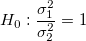 vs. 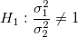 Beidseitiger Test
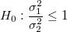 vs. Oberer Test
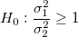 vs. 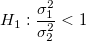 Unterer Test
Teststatistik
Die Statistik des F-Tests wird berechnet als: 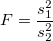
wobei 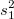 und /math-8a65733320d52c6da4efeeb5888dba00.png "s_2^2\,\!") beobachtete Stichprobenvarianzen sind. Ein Verhältnis von 1 weist auf gleiche Stichprobenvarianzen hin, während von 1 abweichende Verhältnisse auf ungleiche Varianzen der Grundgesamtheit hinweisen. Die Hypothese, dass die Varianzen von zwei Stichproben gleich sind, wird zurückgewiesen, wenn
beobachtete Stichprobenvarianzen sind. Ein Verhältnis von 1 weist auf gleiche Stichprobenvarianzen hin, während von 1 abweichende Verhältnisse auf ungleiche Varianzen der Grundgesamtheit hinweisen. Die Hypothese, dass die Varianzen von zwei Stichproben gleich sind, wird zurückgewiesen, wenn /math-d797c315e459e13f929c1778f48760a9.png "p < \sigma\,\!") , wobei p die berechnete Wahrscheinlichkeit und
, wobei p die berechnete Wahrscheinlichkeit und /math-3ac6004d77c0cc0055e95c99b9dfd7e0.png "\sigma\,\!") das gewählte Signifikanzniveau ist.
das gewählte Signifikanzniveau ist.
Konfidenzintervalle
Die oberen und unteren Konfidenzgrenzwerte für F-Test-Statistik sind:
| Nullhypothese |
Konfidenzintervall |
|
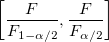 |
|
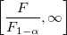 |
|
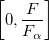 |
wobei 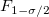 und 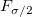 den unteren und oberen kritischen Wert für eine F-Verteilung mit 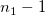 und 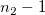 Freiheitsgraden und Signifikanzniveau darstellen.